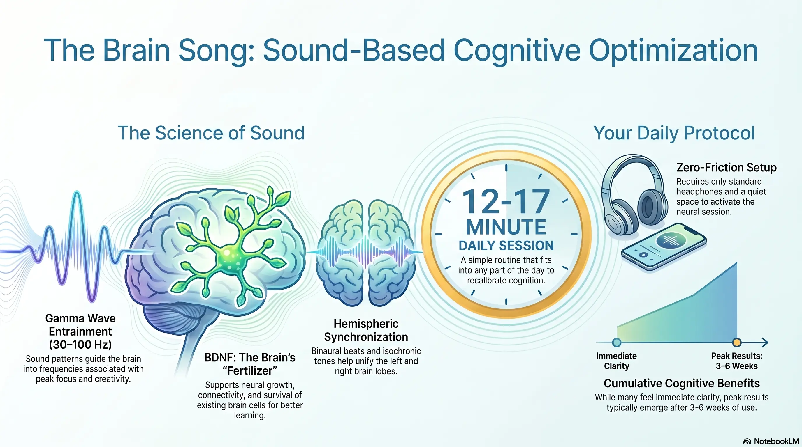

Download instantly
Access your audio the moment your order is complete. Works on any device.
Neuroscience-Backed Audio
A 12-minute daily audio that uses Gamma brainwave entrainment to support focus, memory, and mental clarity — no supplements, no stimulants, no complicated routines.
Yes, I Want a Sharper Brain60-Day Money-Back Guarantee · Instant Digital Delivery · Works With Any Headphones
Sound familiar?
You're not lazy. You're not getting old. Your brain is simply not getting what it needs to perform. And it's affecting everything.
Here's what's happening: Research links these symptoms to declining BDNF — Brain-Derived Neurotrophic Factor, the brain's own "fertilizer." When BDNF drops, neurons communicate less effectively, memory falters, focus weakens, and mental energy drains. The good news: it can be supported naturally.
The Product
The Brain Song is a neuroscience-inspired audio program that uses carefully engineered sound frequencies designed to encourage Gamma brainwave activity. Unlike supplements, medications, or complicated brain-training programs, The Brain Song requires only 12 minutes per day. Users simply wear headphones, press play, and listen.
The creators developed The Brain Song around research suggesting that Gamma brainwave activity — the fastest brainwave frequency, associated with peak cognition, learning, and memory — is linked to higher BDNF production. The goal is simple: help the brain operate closer to its natural peak performance state.
That simplicity is one of the main reasons people pay attention to it. Many adults are looking for practical tools that fit into real life. The Brain Song is designed to be one of those tools.
See it in action
Access your audio the moment your order is complete. Works on any device.
Standard earbuds or over-ear headphones. Find a comfortable spot.
Once a day. Morning, lunch, evening — whenever suits you best.
The Science
The Brain Song relies on the concept of brainwave entrainment — the idea that rhythmic audio stimuli can influence brain activity. The brain naturally operates using electrical activity across different frequency ranges:
| Brainwave | Frequency | Associated State |
|---|---|---|
| Delta | 0.5–4 Hz | Deep sleep and restoration |
| Theta | 4–8 Hz | Creativity, meditation, light sleep |
| Alpha | 8–12 Hz | Calm, relaxed alertness |
| Beta | 12–30 Hz | Active thinking, problem-solving |
| Gamma | 30–100 Hz | Peak cognition, memory, learning, focus |
What is BDNF? BDNF stands for Brain-Derived Neurotrophic Factor. Scientists describe it as "fertilizer for the brain" because it supports neuron survival, neural communication, learning, memory formation, and brain plasticity. Research suggests a link between Gamma brainwave activity and BDNF production — which is the scientific basis behind The Brain Song.
The theory is that when the brain is exposed to a consistent rhythmic audio pattern, it may begin to synchronize with that pattern and shift toward the target frequency state. While the science is still developing, several peer-reviewed studies and meta-analyses have found small-to-moderate cognitive benefits from brainwave audio programs. For a deep dive into the research, see our complete guide to brainwave audio for focus.
What you can expect
Support your brain's ability to concentrate and stay on task without fighting for attention.
BDNF supports the neural connections that make memory retrieval faster and more reliable.
Gamma brainwave activity is associated with alert, clear-headed cognitive performance all day.
No stimulants, no supplements, nothing artificial. Just sound engineered by neuroscience.
Home, office, or on the go. Any standard headphones or earbuds work perfectly.
Real people, real results
"I was skeptical. I'm a scientist — I don't buy into gimmicks. But the research on Gamma frequencies and BDNF is real, and after three weeks I noticed I was finishing tasks faster and retaining information better. This is the real deal."
"I'm 58 and I was genuinely worried about my memory. I couldn't remember names, forgot appointments, felt mentally sluggish all day. After a month of The Brain Song, my husband noticed before I did — I was sharper, quicker, more present."
"I work 60-hour weeks and my brain was toast by Tuesday. I started using this during my lunch break. The afternoon fog that used to hit me every day is almost completely gone. I can't explain it scientifically but I don't care — it works."
Deep Dive
A closer look at the neuroscience behind Gamma brainwaves, BDNF, and how The Brain Song was developed.
Honest Assessment
Is This Right for You?
The Brain Song may be a good fit for:
The Brain Song is a wellness tool, not a medical treatment. Anyone with concerns about cognitive decline, memory disorders, or neurological conditions should speak with a qualified healthcare professional.
Getting the Most from It
What to Expect
You may notice the experience of listening itself. Some users feel relaxed, alert, or mentally reset after the session. Others notice very little.
You may begin to associate the audio with a focus ritual. This can make it easier to settle into work or study. The habit starts to form.
Users who respond well typically report feeling more consistent in their concentration, less mentally scattered, or better able to start tasks.
With consistent use, users may notice better focus, improved daily routine consistency, and greater confidence in their ability to concentrate. The 60-day guarantee covers this full window.
How It Compares
| Feature | The Brain Song | Nootropics | Meditation Apps | Brain Training Apps |
|---|---|---|---|---|
| Daily Time | 12 minutes | Seconds | 10–30 min | 10–20 min |
| Drug-Free | ✓ | ✗ | ✓ | ✓ |
| One-Time Cost | ✓ | ✗ Monthly | ✗ Subscription | ✗ Subscription |
| Passive Use | ✓ | ✓ | ✗ | ✗ |
| 60-Day Refund | ✓ | Varies | Varies | Varies |
| Side Effects | Minimal | Possible | None | None |
The Brain Song's main advantages are simplicity, low cost, and its passive format — easier to maintain consistently than active training apps or daily supplement regimens.
The neuroscience
BDNF (Brain-Derived Neurotrophic Factor) is a protein produced naturally in your brain. Neuroscientists describe it as "fertilizer for neurons" — it supports the survival of existing brain cells, encourages the formation of new neural connections, and plays a central role in learning, memory, and cognitive clarity.
Research has consistently linked Gamma brainwave activity (30–100 Hz) to higher BDNF production and improved cognitive performance. Gamma waves are present during peak mental states — deep focus, creative insight, rapid information processing. The Brain Song uses carefully designed audio patterns to gently guide the brain toward Gamma frequencies — working with its natural biology, not against it.
*These statements have not been evaluated by the FDA. This product is not intended to diagnose, treat, cure, or prevent any disease.
Visual Summary

Zero risk
Your purchase is backed by ClickBank's full 60-day money-back guarantee. If you try The Brain Song and aren't satisfied for any reason, simply contact support within 60 days for a complete refund — no questions asked.
Get instant access
Download The Brain Song instantly. 12 minutes a day. No pills, no gym, no complex routine. Just press play.
Get Instant Access Now →60-Day Money-Back Guarantee · Secure Checkout via ClickBank · Instant Delivery
Questions answered
Join thousands who use The Brain Song daily. 12 minutes. One simple habit. A sharper, clearer mind.
Yes, I Want a Sharper Brain →Secure checkout · ClickBank · No subscription